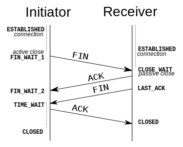

面试技能收集
Table of Contents
本页旨在记录准备面试过程中学习的知识。
C/C++
Cast
dynamic_cast
dynamic_cast can only be used with pointers and references to
classes(or with void *)
- It is naturally includes pointer upcast (converting from pointer-to-derived to pointer-to-base), in the same way as allowed as an implicit conversion
- It can also downcast (convert from pointer-to-base to pointer-to-derived) polymorphic classes(those with virtual members) if and only if the pointed object is a valid complete object of the target type. (Normally this means that it can convert pointer-to-base that is previously converted from pointer-to-derived.)
static_cast
static_cast can perform conversion between pointers to related
classes, not only upcast but also downcast. No checks are
performed during runtime to guarentee that the object being
converted is in fact a full object of the destination type.
static_cast is also able to perform all conversions allowed
implicitly(not only those with pointers to classes), and is also
able to perform the opposite of these.1
reinterpret_cast
reinterpret_cast converts any pointer type to any other pointer
type, even of unrelated classes. The operation result is a simple
binary copy of the value from one pointer to the other.
It can also cast pointers to or from integer type.
The conversions that can be performed by reinterpret_cast but
not by static_cast are low-level operations based on
reinterpreting the binary representations of the types. which on
most cases results in code which is system-specific, and thus
non-portable. For example:
class A { /* ... */ }; class B { /* ... */ }; A * a = new A; B * b = reinterpret_cast<B*>(a);
const_cast
This type of casting manipulates the constness of the object pointed by a pointer, either to be set or to be removed.
Conclusion
Use dynamic_cast to ensure target type. static_cast to do most
implicit casting.
Non-pointer objects can only be casted by static_cast.
Library
static vs shared library
For more information 2.
- Dll(shared) pros: can be used to reuse/share code between several products; load in the process memory on demand and can be unloaded when not needed; can be upgrade independently of the rest of the program
- Dll cons: performance impact of the dll loading and code rebasing; versioning problem("dll hell")
- Lib(static) pros: no performance impact as code is always loaded in the process and is not rebased; no versioning problems.
- Lib cons: executable/process "bloat" – all the code is in your executable and is loaded upon process start, no reuse/sharing – each product has its own copy of code.
sizeof
sizeof will calculate in-memory size of an object. So when
applying it to STL objects, it will results in the sizeof STL
container itself instead of the size of all its elements. Example
(on 64bit machine):
#include <iostream> #include <string> #include <vector> using namespace std; int main(int argc, char *argv[]) { string str = "abcdefgaaaaaaaaaaaa"; cout << "sizeof(str) = " << sizeof(str) << endl; vector<int> vec(100); cout << "sizeof(vec(100)) = " << sizeof(vec) << endl; vector<char> cvec(100); cout << "sizeof(cvec(100)) = " << sizeof(cvec) << endl; return 0; }
如何防止类被实例化
- Make the class an abstract class by including at least one pure virtual function.
- Make the constructor of a class private, and then create a static function which will return some instantances of the class. If only one instance of the class is allowed, we should also keep a reference to this instance in the class
如何防止类被继承
Reasons of preventing derived classes:
- Mark a class as non-subclassable so you can safely use a non-virtual destructor and avoid a vtable altogether.
- Prevent class inheritance in C++
Python
装饰器 Decorator
python 中的decorator本质上就是包装函数 wrap ，以被包装函数 fn
为参数，返回一个包装后的函数并赋给 fn 。
例3：
def hello(fn): def wrapper(): print "hello, %s" % fn.__name__ fn() print "goodby, %s" % fn.__name__ return wrapper @hello def foo(): print "i am foo" foo()
这里 @hello 的语法想当于执行了 func = decorator(func) ，即
decorator 以函数 func 为参数，返回包装后的参数。注意到这里最后
的赋值，所以它相当于lisp里的 (set! func (decorator func)) 4，
而相比于使用 set! 的 lisp 实现，python的优势在于简化了语法。
函数 decorator 本身也可以接收参数：
@decorator(arg1, arg2) def func(): pass
相当于:
func = decorator(arg1, arg2)(func)
Network
TCP/UDP
UDP(User Datagram Protocol) is used to provide multiplexing for processes in a host.
UDP uses <host, port> to identify a process.
The end-to-end argument: it is one of the most important principles in system design. It says that a function(in network, providing reliable/ordered delivery) should not be provided in lower levels unless it can be completely and correctly implemented at that level. However it does allow for functions to be incompletely provided at lower level as performance optimization. This is why it is perfectly consistent with end-to-end argument to perform error detection(e.g. CRC) on a hop-to-hop basis. Detecting and retransmiting a single corrupt packet accross one hop is more preferable to having to retransmiting an entire file end-to-end.
TCP's demux key is given by <srcPort, srcIP, dstPort, dstIP>.
Check TCP frame for frame structure.
Because TCP is byte-oriented protocol, each byte has a sequence number, the Sequence Number field carrys the sequence number of the first byte of the segment.
Establish TCP connection(Three-way handshake)
Client => Server/Client <= Server 1. => SYN, SequneceNum = x 2. <= SYN+ACK, SequenceNum = y, Acknowledgement = x+1 3. => ACK, Acknowledgement = y+1
The SequenceNums are the starting sequence numbers the two sides plan to use for their respective byte stream.
- Note that even if the 3rd packet is lost, the connection is still OK to use, because after the 2nd step, the client's state is changed to ESTABLISHED. And every packet contains an Acknowledge number, and it will turn the server into ESTABLISHED after the first packet from client is received.
- Most sender will set a timer after sending some packet, and if after several tries the expected response does not arrive, TCP give up and returns to the CLOSED state.
Termination of TCP connection

Figure 1: Connection termination
The state changes:
This side closes first: ESTABLISHED -> FIN_WAIT_1 -> FIN_WAIT_2 -> TIME_WAIT -> CLOSED That side closes first: ESTABLISHED -> CLOSE_WAIT -> LAST_ACK -> CLOSED Both side close at the same time: ESTABLISHED -> FIN_WAIT_1 -> CLOSING -> TIME_WAIT -> CLOSED
Note that the connection cannot move from TIME_WAIT to CLOSED until it has waited for two times the maximum amount of the an IP datagram can live on the internet(i.e. 120s). The reason is that while the local side(on the left of the image) of the connection has sent an ACK in response of the other side's FIN segment, it does not know that the ACK was successfully delivered. As a consequence, the other side might retransmit its FIN segment, and this second FIN segment might be delayed in the internet. If the connection is allowed to move directly to CLOSED state, then another application might came along and use the same connection, and the delayed FIN segment might immediatly initiate the termination of the newly created connection.
从输入URL到浏览器显示，后台发生了什么
Linux System Programming
IPC(Inter-Process Communication)
PIPE
The atomicity of write of pipe is controled by PIPE_BUF, if
the size of written is less than or equal to PIPE_BUF, then the
written processes is ensured to be atomic. Otherwise, the data
written by different processes might overlap.
FIFO
FIFO can exist even after the processes quit. The remaining feature is more or less the same to PIPE.
message queue
Note the behavior of msgrcv if the buffer size is less than the
size of message in message queue. man msgrcv to find more details.
shared memory
Still, notice the behavior of shmget if the required size is
greater than the size of already created shared memory.
Also shared memory is critical area, i.e. a client might be
reading while the server is writing. Thus shared memory is often
combined with semaphore to do synchronization.
semaphore
How to avoid deadlock?
=> UNIX uses the "All or nothing" mechanism. That means you either get all the resources or nothing at all. You should request all the resources at the same time and if one of them is blocked you may not get any of the others.
Deadlock
The Four conditions should all hold in a system for deadlock to occur:
- Mutal Exclusion :: At least one resource must be held in a non-shareable mode. Only one process can use the resource at any given instant of time.
- Hold and Wait or Resource Holding :: A process is currently holding at least one resource and requesting additional resources which are being held by other processes.
- No Preemption :: A resource can be released only voluntarily by the process holding it, after that process has completed its task.
- Circular Wait :: A process must be waiting for a resource which is being held by another process, which in turn waiting for the first process to release the resource.
Unfulfillment of any of these conditions is enough to preclude a deadlock from occurring.
线程与进程
进程是系统分配资源的基本单位，线程是系统调度的基本单位。
联系
- 一个进程至少拥有一个线程──主线程，也可以拥有多个线程。一个线程 必须有一个父进程。多个进程可以并发执行，一个线程可以创建和撤销另 一个线程，同一个进程中的多个线程可以并发执行。
- 同一进程中的所有线程共享该进程的所有资源。但各自拥有自己的堆栈。
- 线程的同步方式与进程相同，但可以额外地使用全局变量来同步。
区别
- 系统开销：创建或删除 进程 时，由于系统需要分配和回收资源，所以 开销明显大于线程的创建和删除。
- 资源管理：若一个进程崩溃，在保护模式下不会影响其它进程。而线程没 有单独的地址空间，崩溃之后进程也随之崩溃。因此多进程方式比多线程 更健壮。但线程切换耗费更大的资源。
- 通信方式：进程间通信主要包括PIPE，FIFO，System V IPC(Message Queue, Shared Memory, Semaphore)，socket通信。这些方法同样适用于 线程间通信，但对于同一进程的不同线程，使用全局变量进行通信的效率 更高。
参考
进程调度
请描述一下进程是如何调度的。
- 先来先服务（FCFS）
- 即先来的任务先运行，后来的不可抢占，直到前 面的任务完成为止。特点是简单，但效率低；对长作业有利，对短作业 不利；CPU繁忙型有利，I/O繁忙型不利。
- 短作业优先（SJF）
- 从队列中选择一个或若干个估计运行时间短的作业 运行。平均等待时间短，平均周转时间短。但长作业不利，有时甚至永 远无法得到运行；未考虑进行的紧迫性；估算时间不准确。
- 优先级调度算法
- 为进程分配优先级，代表紧迫程度，依据不同的子策 略（如是否可抢占）有不同的子算法。
- 高响应比优先调度算法
- 是对FCFS和SJF的一个平衡，对队列中的进程计 算响应比，并选取最小的一个或几个先运行。
- 时间片轮转调度算法
- 选择就绪队列中的一个进程，按先到先得的策略， 但每个进程每次只能运行一个时间片，之后就移动到队列的末尾。该算 法与时间片的选择有关，如时间片过大，则退化成FCFS算法。
- 多级反馈队列调度算法
- 它根据不同的优先级创建了不同的就绪队列， 进程的优先级动态进行调整。当优先级高的队列空的时候才运行优先级 低的队列。任务之间是可以抢占的。